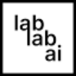

P
PseudoEditorРазработка
«PseudoEditor» представлен в разделе «Разработка». При выборе проверьте нужную операцию и условия работы с результатом.
Раздел «Разработка»: варианты ИИ для этой задачи, описания возможностей и переходы к обзорам. Сравните несколько решений на одинаковом примере.
Опишите небольшое приложение таймера и поведение его кнопок, чтобы получить основу реализации. Молекула помогает написать код по описанию; работу экрана, сохранение состояния и установку готового приложения проверяйте отдельно в своей среде разработки.
Подготовь основу приложения таймера для занятий. Нужны начало, пауза и сброс, сохранение заданной длительности. Объясни разделение логики и интерфейса, перечисли случаи для самостоятельной проверки.

«PseudoEditor» представлен в разделе «Разработка». При выборе проверьте нужную операцию и условия работы с результатом.
Для «Sage AI» сначала определите свою задачу и требуемый результат. Карточка относится к направлению «Разработка».
SENEX Intelligent Chain объединяет искусственный интеллект с блокчейн-инфраструктурой для работы с данными. В описании представлены распределённые ИИ-процессы и настраиваемые токены. Продукт связывает эти компоненты внутри общей цепочки, позволяя рассматривать обработку данных вместе с параметрами блокчейн-системы и её цифровыми элементами.
«Websim AI» представлен в разделе «Разработка». При выборе проверьте нужную операцию и условия работы с результатом.
Xero позволяет работать с ИИ через интерфейс на естественном языке. Платформа предоставляет преобразование данных и операции обучения моделей, а также их тестирование. Пользователь связывает эти средства при подготовке собственного сценария машинного обучения и рассмотрении результатов в рамках выбранной задачи.
«Zoo by Replicate» готовит текстовый черновик по условиям задачи.
Для «AI-Flow» сначала определите свою задачу и требуемый результат. Карточка относится к направлению «ИИ-ассистент».
Algalon предоставляет разработчикам средства ИИ для блокчейн-проектов через API. В наборе названы обработка естественного языка, AutoML и генеративные состязательные сети. Платформа предназначена для включения этих технологий в приложения, соединяя программный интерфейс с инструментами машинного обучения под задачи блокчейн-разработки.
Для «CAD with AI» сначала определите свою задачу и требуемый результат. Карточка относится к направлению «Разработка».
Chad AI объединяет языковые и творческие модели в русскоязычном окне. Среди направлений представлены тексты, изображения и видео, а также музыкальная генерация. Пользователь работает с разными нейросетями через общий сервис, рассчитанный на доступ из России и оплату российскими картами.
«Code Genie AI» представлен в разделе «Разработка». При выборе проверьте нужную операцию и условия работы с результатом.
«DraftAid» готовит визуальные материалы по заданию.
Сравнивать «Engraph» с другими инструментами раздела «Разработка» удобнее на одинаковом исходном материале.
Equixly проверяет API при разработке и выявляет потенциальные уязвимости средствами ИИ. Подключение к рабочему окружению сочетается с тестированием на проникновение. Команда может использовать продукт в процессе разработки интерфейсов, связывая обнаружение проблем с предусмотренными способами интеграции и проведения тестов.
«Findface SDK» работает с задачами проверки личности.
Для «Fluid AI» сначала определите свою задачу и требуемый результат. Карточка относится к направлению «Разработка».
Сравнивать «Lamini» с другими инструментами раздела «ИИ-ассистент» удобнее на одинаковом исходном материале.
Для «Lyzr AI» сначала определите свою задачу и требуемый результат. Карточка относится к направлению «ИИ-ассистент».
«Rumi» представлен в разделе «Конструкторы сайтов и лендингов». При выборе проверьте нужную операцию и условия работы с результатом.
«Sweep AI» помогает соединить повторяемые рабочие действия.
«TolyGPT» помогает готовить изменения программного кода.
Сравнивать «Translation Strings» с другими инструментами раздела «Разработка» удобнее на одинаковом исходном материале.
Для «Typeblock» сначала определите свою задачу и требуемый результат. Карточка относится к направлению «Разработка».
Сравнивать «uKit AI» с другими инструментами раздела «Разработка» удобнее на одинаковом исходном материале.
«Vision Labs» работает с задачами проверки личности.
Warden AI Copilot помогает инженерам работать с рисками проекта и готовить предложения по их снижению. В описании также указано создание технических диаграмм. Для конкретной системы сопоставьте найденный риск с компонентом и исходным условием; схема должна отражать реальную архитектуру, а предложенная мера нуждается в предметной проверке.
Для «Applitools Eyes» сначала определите свою задачу и требуемый результат. Карточка относится к направлению «Разработка».
Для «BotLab» сначала определите свою задачу и требуемый результат. Карточка относится к направлению «Разработка».
Botx предлагает создавать автоматизированные процессы без самостоятельного программирования, объединяя методы машинного обучения, обработки языка и компьютерного зрения. Для конкретного проекта начните с одного типа входных данных. Проверьте, какие операции доступны в выбранной конфигурации и как результат передаётся дальше; общий набор технологий не определяет качество отдельного сценария.
Для «CodeConvert AI» сначала определите свою задачу и требуемый результат. Карточка относится к направлению «Разработка».
«CodeSquire» помогает готовить изменения программного кода.
Сравнивать «CodiumAI» с другими инструментами раздела «Разработка» удобнее на одинаковом исходном материале.
«Continue.dev» помогает готовить изменения программного кода.
«Duino Code Generator» помогает готовить изменения программного кода.
«Flexberry AI Assistant» помогает соединить повторяемые рабочие действия.
Сравнивать «Flowity AI» с другими инструментами раздела «Разработка» удобнее на одинаковом исходном материале.
«GigaCode» помогает готовить изменения программного кода.
Для «Haddock» сначала определите свою задачу и требуемый результат. Карточка относится к направлению «Разработка».
«Iconify AI» готовит варианты значков для приложения.
Сравнивать «Jetbrains IDE Plugin» с другими инструментами раздела «ИИ-ассистент» удобнее на одинаковом исходном материале.
Для «JSON To ChatGPT» сначала определите свою задачу и требуемый результат. Карточка относится к направлению «Разработка».
Julius отвечает на вопросы по данным, подготавливает таблицы, графики и отчёты. Сервис показывает код анализа, поэтому выбранные фильтры и расчёты можно сверять с исходными значениями.
Для «KaneAI by LambdaTest» сначала определите свою задачу и требуемый результат. Карточка относится к направлению «ИИ-ассистент».
Для «Krasp» сначала определите свою задачу и требуемый результат. Карточка относится к направлению «Разработка».

«Lablab AI» представлен в разделе «Образование». При выборе проверьте нужную операцию и условия работы с результатом.

Ludo.ai используют, чтобы получать изображения из словесного задания. Ещё одно направление работы: готовить музыкальную композицию по заданию.
«Mindgard» представлен в разделе «Разработка». При выборе проверьте нужную операцию и условия работы с результатом.
«MindsDB» представлен в разделе «Разработка». При выборе проверьте нужную операцию и условия работы с результатом.
Страница 2 из 6